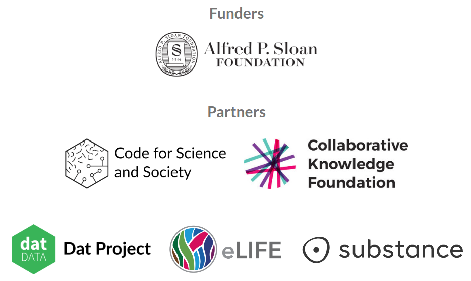

class: center, middle <img src="logo-name.svg" width="400" /> <div> <a href="https://twitter.com/NokomeBentley">@NokomeBentley</a> <a href="https://twitter.com/stencila">@stencila</a> </div> #### ProPublica, New York 2 November 2017 --- class: center, middle ### Researchers are under increasing pressure to make their research reproducible  ??? There is growing recognition, including in the mainstream media, of a so called "reproducibility crisis" in science. And the calls for researchers to make their research more reproducible are growing louder. Researchers, from digital humanities, to neuroscience, to data driven journalism are being encouraged to make their work open, transparent and reproducible. --- class: center, middle ### But creating reproducible research can be difficult... particularly if you don't know how to code. ??? But creating reproducible research can be difficult, particularly if you're not a coder. That's not surprising, the tools for reproducible research have been created by researchers at the "codey" end of the spectrum. They, like me, have been "scratching their own itch" and creating tools that they, as coders, find useful. But for people who are less comfortable with code, that can be intimidating - it creates a barrier to entry which alienates them from reproducible practices. --- class: center, middle <img src="marwick-higgins-tweets.png" height="600px"> ??? That situation is captured well in this Twitter conversation. Ben Marwick, an archaeologist and strong advocate for reproducible research, tweeted that journal editors should demand sharing code. The Twitterverse responded enthusiastically with retweets and likes. But there was a lone reply from Peter Higgins, a biomedical researcher, who pointed out that while that is an admirable goal, in his field they are "so not ready" to share code, simply because most people still use Excel. --- class: center, middle  .note[Life science researchers. Courtesy of Naomi Penfold, eLife] ??? This is indeed borne out in the data. This plot, courtesy of the publisher eLife, illustrates just how dominant Excel still is in life sciences. The situation is probably similar in many other fields of research --- class: center, middle ### Moving tools for reproducibility **towards the user**... an "office suite" for reproducible research? ??? Currently, the primary strategy for making more research reproducible is to encourage researchers to move towards the existing code-based tools. Organizations like Data Carpentry do a great job of that by teaching researchers to learn to code. But an additional, complementary, strategy might be to **move the tools towards the user**. And a lot, if not most, research activity lives in a world of the office suite: spreadsheets and word processors. --- <video class="centered" height="580px" controls="controls" autoplay="" loop=""> <source src="doc-screencast.mp4" type="video/mp4"> </video> --- <video class="centered" height="580px" controls="controls" autoplay="" loop=""> <source src="sheet-screencast.mp4" type="video/mp4"> </video> --- class: middle ### Not "just another office suite" silo, we're aiming for... - a **learning continuum** between clicking and coding (close integration with R, Python etc) - a **collaboration continuum** between clickers and coders (support for plain text formats e.g RMarkdown as well as WYSIWYG) - **interoperability** with existing tools (e.g. Jupyter, RStudio) - a **reproducibility continuum** across authoring, collaboration, editing, reviewing, publishing and reading --- class: middle ### Plan - currently 7 months into a 12 month project, focused on Stencila Sheets, funded by the **Alfred P. Sloan Foundation** - on a 5 week "road trip" getting ideas and feedback on Stencila Sheets - 2 months into a partnership with **eLife** on the ["Reproducible Document Stack"](https://elifesciences.org/labs/7dbeb390/reproducible-document-stack-supporting-the-next-generation-research-article) - the technology to publish computationally reproducible research articles online. - aiming for a *1.0 release* in March 2018 --- class: center, middle ### https://community.stenci.la 